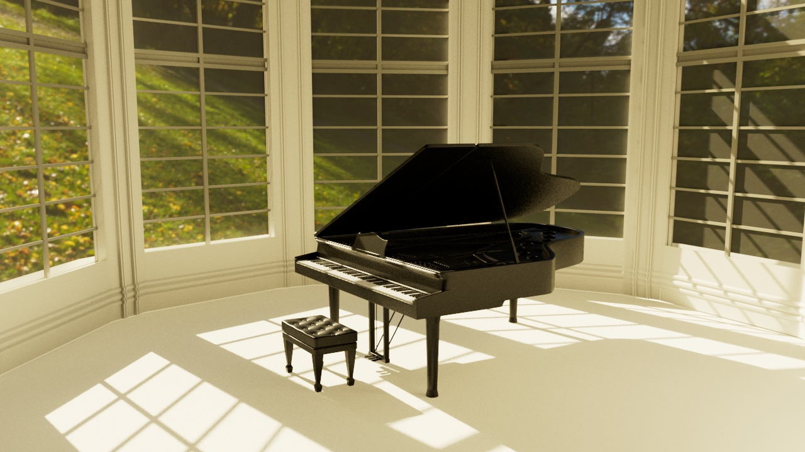

Since my high school days, I've been self-taught in Maya, continually honing my skills in 3D modeling by adhering to principles of proper topology and geometry. Over the years, my proficiency has grown, yielding progressively superior models. I've become adept at UV mapping and texturing, enhancing the realism of my creations. My models come to life through the sophisticated use of Arnold rendering, which adds a layer of visual depth and authenticity to my work.
My most recent creation is a meticulously crafted model of a grand piano. Starting with an image reference to ensure accuracy, I sculpted the piano, paying close attention to detail. Following the modeling, I skillfully UV mapped and textured the piece to give it a lifelike appearance. To showcase the piano, I designed a lavish setting that complements its elegance and used ambient HDRI dome lighting to cast the perfect glow, completing the scene with a touch of realism.
For an IAT343 assignment, I revisited a personal milestone: a guitar model that marked one of my earliest attempts at 3D modeling when I was first learning the software. This time, I reimagined the instrument with refined textures, lighting, and a complementary environment. Reflecting on the finished piece, it's evident how experience has enriched the quality of my work, bringing a new level of sophistication to the model.